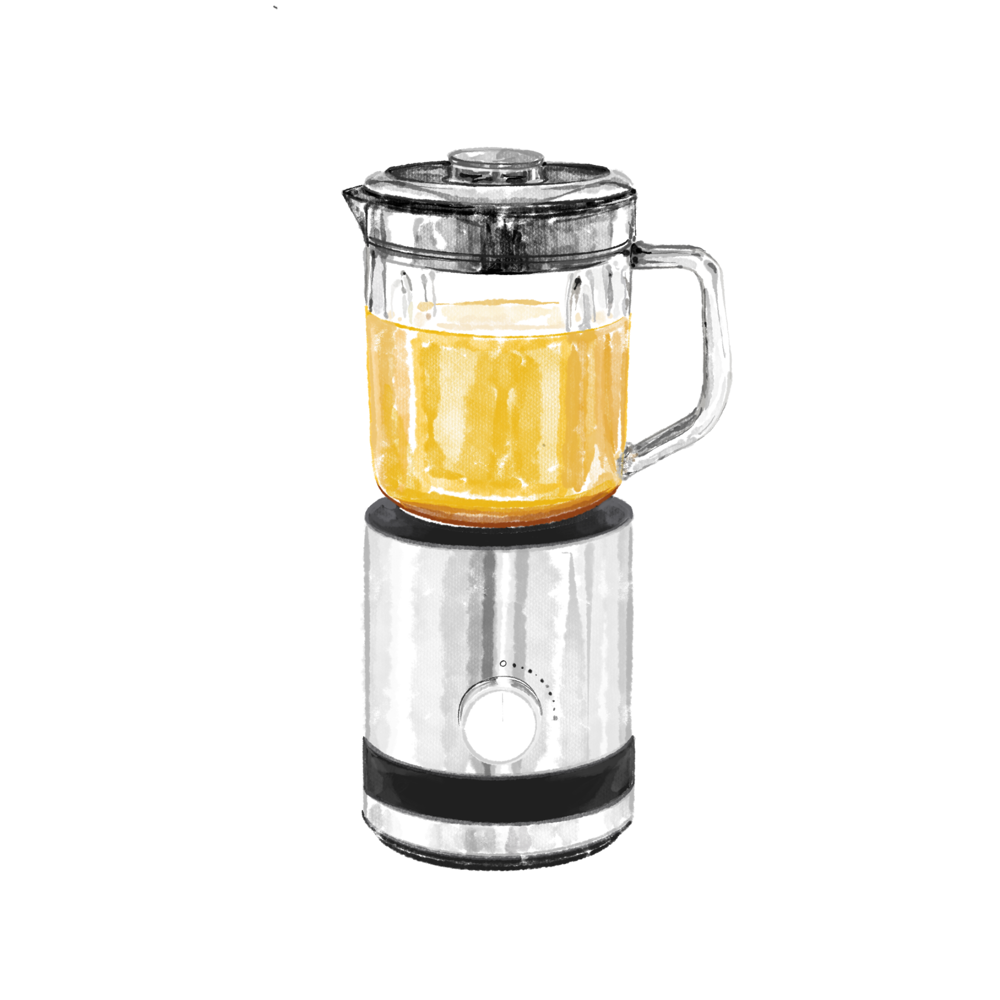
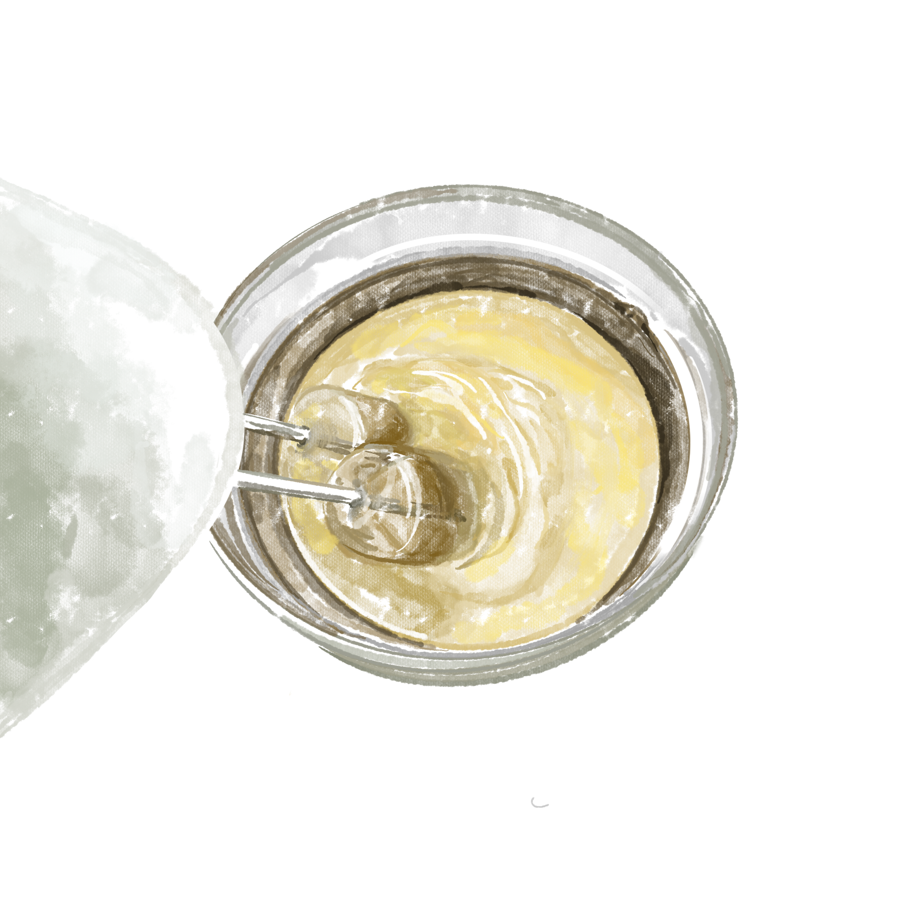
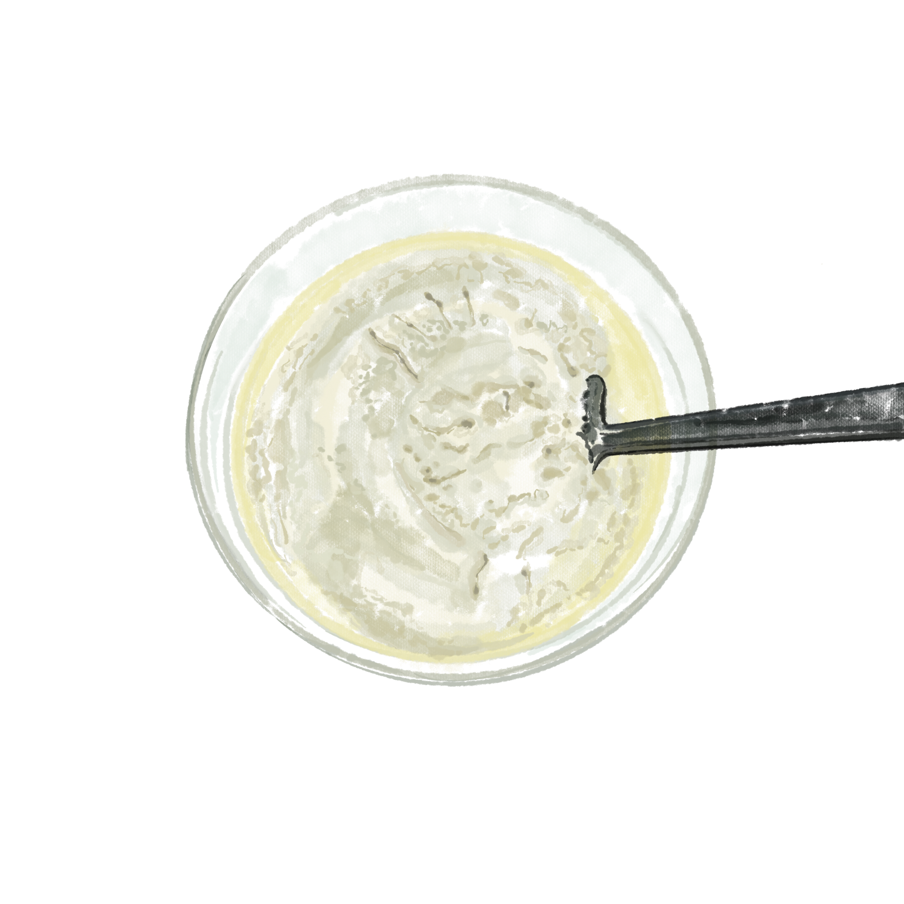
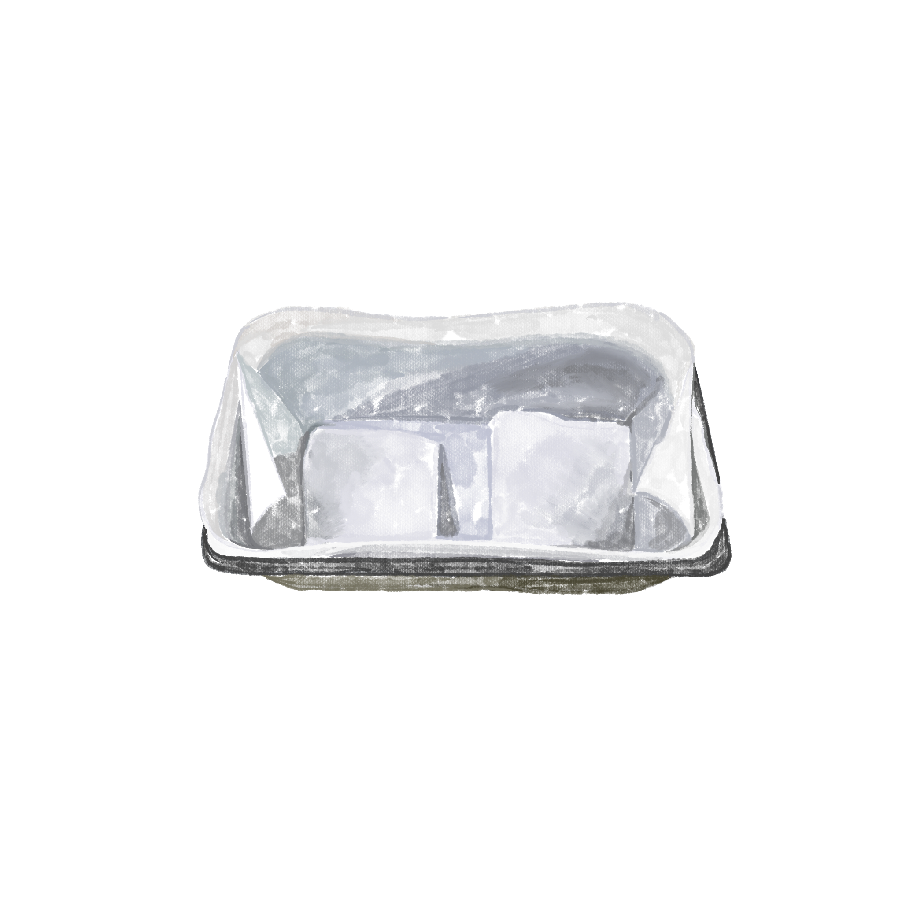
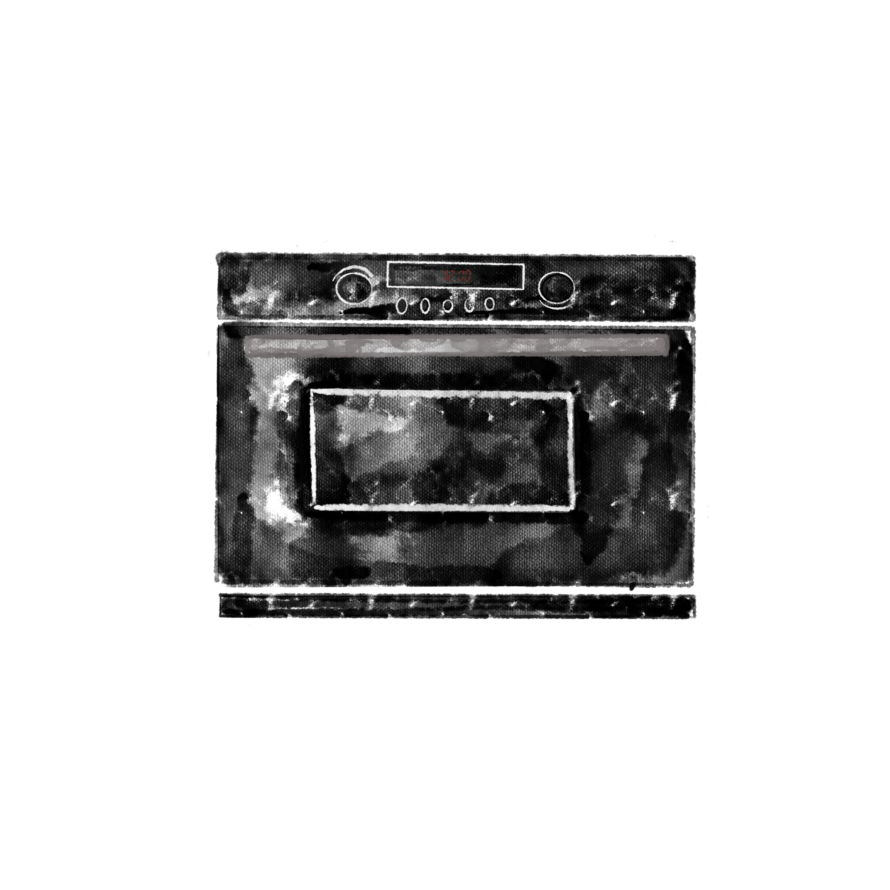
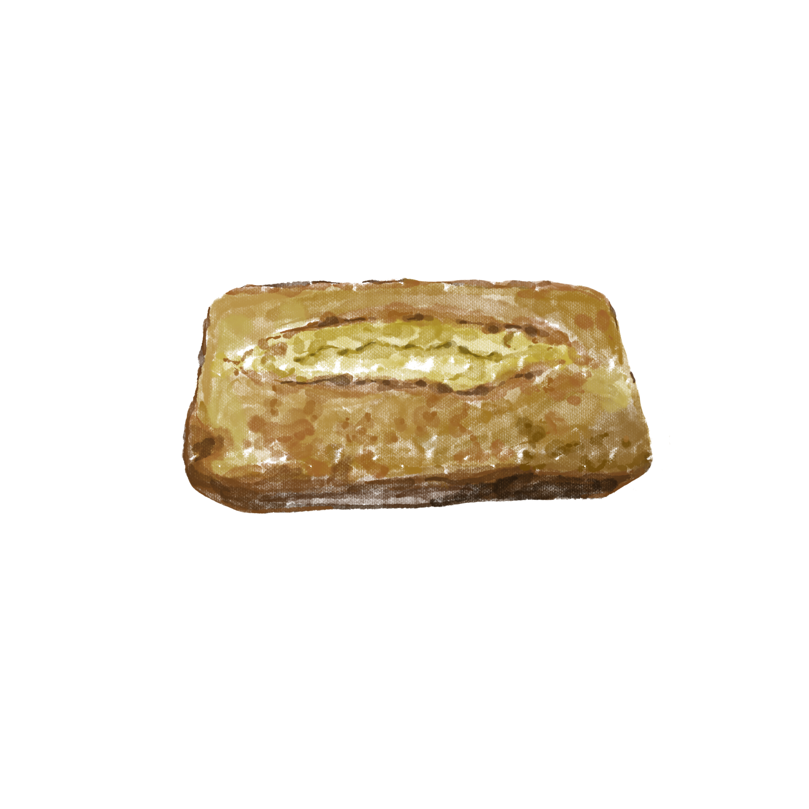

1
호박을 껍질 자르기 좋게 등분하고 물 조금 넣고 삶아준다. 충분히 식힌 후 믹서기로 갈아준다.
2
설탕, 밀가루, 버터, 베이킹 파우더를 1파운드씩 준비 한다. 버터를 실온에서 충분히 녹인다.


3
실온에서 부드러워진 버터를 거품기로 잘 풀어준다. 그 후 설탕, 계란을 넣어준다.(계란은 2~3번 정도 나눠 넣어준다)
4
밀가루 소금 베이킹 파우더를 넣고 살짝 아래에서 위로 떠올리 듯 섞어준다.


5
파운드 틀에 버터나 오일을 바른 후 유산지를 깔아준다.
6
유산지 위에 반죽을 담고 180도에서 10분, 다시 온도 조금 낮춰 30분 가량 구워준다.


7
굽고 난 후 식히면 완성.